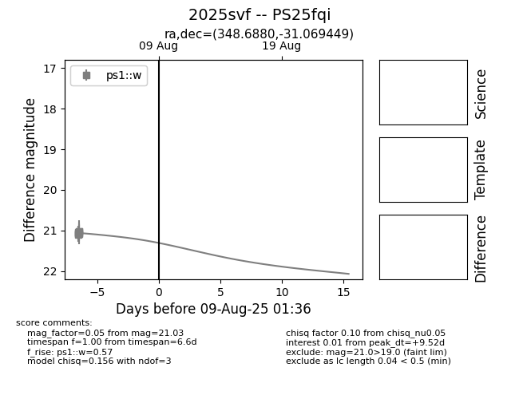

Target 2025svf at 2025-08-06 17:27, see:
TNS: wis-tns.org/object/2025svf
YSE: ziggy.ucolick.org/yse/transient_detail/2025svf
alt names
2025svf (yse,tns)
PS25fqi (panstarrs)
coordinates:
equatorial (ra, dec) = (348.6880,-31.06945)
galactic (l, b) = (16.5693,-68.55964)
photometry
last ps1::w=21.03
8 ps1::w detections
